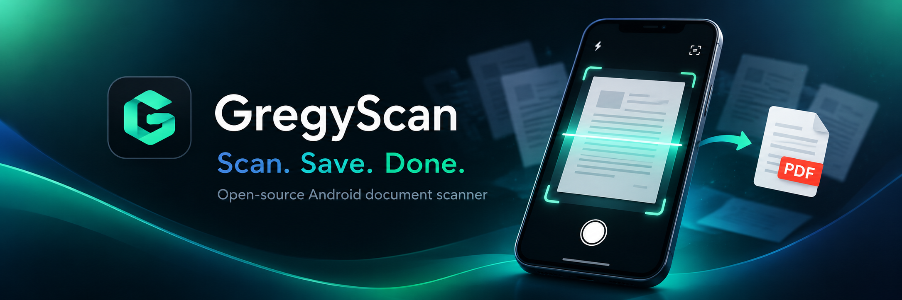

Direct capture
Open GregyScan and start scanning documents using the Google ML Kit Document Scanner.
Free and open source · Android 10+

GregyScan is a simple Android document scanner focused on a fast, reliable workflow from capture to PDF.
GregyScan keeps the main workflow short while providing advanced document tools when you need them.
Open GregyScan and start scanning documents using the Google ML Kit Document Scanner.
Automatic capture, cropping, rotation and scanner filters are combined with local cleanup and document editing tools.
Create single-page or multi-page PDFs and export images in supported formats.
Return to recent temporary working copies without turning GregyScan into a permanent document database.
Extract selectable text and detect QR codes and barcodes using Google ML Kit components.
Add reusable visual signatures and stamps directly to documents. These are visual annotations, not cryptographic digital signatures.
Use smart cleanup, manual cleanup and redaction tools to prepare documents before saving or sharing.
Save documents to Android storage, share them through the Android Sharesheet or send them to the system print service.
GregyScan does not operate a GregyScan cloud document service, does not require an account and does not contain advertising or first-party analytics in the public GitHub release.
Capture one or more pages and review the automatic crop and enhancement.
Check the result and use document tools when additional cleanup or editing is needed.
Save the final PDF or images, share them with another application or print them through Android.
GregyScan does not operate a GregyScan document-upload server. Normal scanning, PDF creation, OCR, cleanup and redaction are designed to run locally on the device. A third-party sharing application, cloud-backed Gallery or storage provider may upload a file after you explicitly choose that service. See the Privacy Policy.
Google Play services provides components used by Google ML Kit, including the document scanner and recognition models. Required components may need to download or update before first use.
No. Recent scans are temporary working copies. Important documents should always be explicitly saved to a permanent destination selected by the user.
Uninstalling GregyScan removes its private application data. Files already exported to shared storage or a user-selected folder are not normally removed with the application.
No. GregyScan signatures and stamps are visual image annotations. They do not cryptographically verify identity, authorization or document authenticity.
Yes. GregyScan source code is publicly available on GitHub and is distributed under the applicable MIT license terms included in the repository.
The latest public APK is available from the GregyScan GitHub Releases page .
For bugs and feature suggestions, open a focused GitHub issue . Please never attach private documents, passwords or credentials.
Email: gregor.dolar@gmail.com
If GregyScan is useful to you, you can optionally support its continued development.
Support GregyScan on Buy Me a CoffeeSupport is optional and does not unlock features or change support priority.